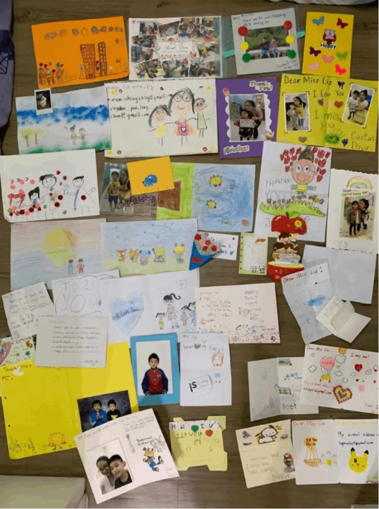
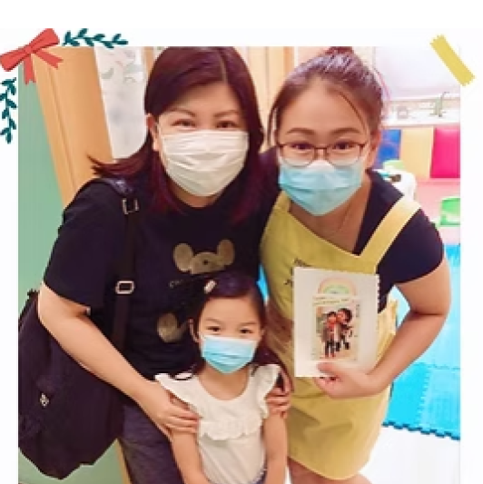

Thank-you cards & letters from parents and students 💌

"I'm so happy! I achieved such a great result on my B1 exam! It's unbelievable. Just two months ago, I failed the exam, and I was so frustrated and confused. I didn't know how to improve, especially in writing and grammar, since it's not my native language. But thankfully, Miss Liz IBG has been incredibly helpful these past two months, constantly practicing and training my responses and helping me think more deeply. I went from DD to AB, it's truly unbelievable. Miss Liz has really helped me a lot, both in exams and other aspects. I sincerely hope that people who lack confidence or feel helpless can also achieve the same success as me."

"I just want to say 'Thank You so much' to Miss Liz for her knowledge and teaching skills in English teaching. She is very caring, She always encouraged me when I doubted myself and thought I would fail the B1 exam. Miss Liz helped me pass my exam, so I can apply for ILR. I'm very very thankful to her."
"Before I started learning with Miss, my English was almost zero, so I was very worried about the B1 exam. Miss was very patient, kind and always encouraged me. We practised many B1 speaking tests together, and she helped me become more confident. At first, I thought I would need to take the B1 exam a few times. To my surprise, I passed on my first attempt! I was so happy because I never expected to pass the exam on my first attempt. Thank you so much for all your help and support. I highly recommend Miss to anyone preparing for the B1 exam."

"My daughter Macy is active all the time and she doesn't like to sit still, so she hated learning in a traditional classroom while studying in Hong Kong. A friend of mine told me about the fun and creative ways Miss Liz teaches English, so I enrolled Macy in her private 1 on 1 right away. Macy enjoyed Miss Liz's lessons, and she always looked forward to the next week for another of her class. Later, my family and I have moved to the United Kingdom, and Macy has adapted her school life well here. I can't thank Miss Liz enough, as she truly helped Macy build up her English skills, so that Macy can understand the teachers and pick up the school work quickly. We still keep in touch by Whatsapp messages, and Miss Liz still cares about Macy by sending her birthday wishes, even playing a happy birthday song on the piano during a video chat for Macy! Macy loves Miss Liz very much. I am happy for Macy as she can have such a caring, patient and skilled English teacher in her life."

"Miss Liz designs fun games for me to learn English. She is my favorite teacher. I like her very much, and I hope she can teach more children. She has a lot of experience. She teaches a lot of children. I have made a lot of progress in my English! After attending her class, I use less Cantonese-English. I love Miss Liz!"
"I really appreciate Miss Liz's passionate in teaching children or even youth. Her teaching style is very different to the traditional method providing in most of the schools in Hong Kong. She used to help children to understand and focus on the lessons by playing games, stories telling, or even making ice-cream.
My children were her students when they were still in kindergarten, unlike other tuitions, they expected for Liz's lessons every week.
After my family has moved from HK to the UK, my children have still enrolled her 1 to 1 online class during summer break. I am amazed by her online teaching material which is tailor-made for each student. My children never feel bored in her lesson, and I really see the great improvement of them. My daughter even treats Miss Liz as her friend rather than a teacher. My children are lucky to have met such a good teacher at their early ages."
"I have a boy (10) and a girl (6), With the technology expansion, youth will choose You Tube rather than books. As a result of this, they may not like reading. My boy encountered the same problem. As a parent, you will think reading and writing are important to kids in their study specially in Hong Kong. I had every traditional English classes before and the classes induced pains and tears in our family bonding when we have conflict, where a mum wants the kids to learn English and the kids do not want to learn.
Fortunately, we meet Miss Liz in the zoom class. She is NOT a magician and makes our wishes true immediately. However, she is smart and make a way out for learning with Fun. She tried understanding my kids's weakness and talent and interests and make all necessary training material to meet the kids's interests and allow them to learn English happily.
The road is NOT easy. At the first day, my boy kept sending Miss Liz different excuses for NOT doing the exercises and readings from the classes.
Miss Liz did not give up any chances and finding the way for my kids, to learn English with fun. She sorts out different topics and finds out the most interesting theme to capture my boy's attention in order to do more readings with him. I feel so impressed that she can have my son to finish reading quite a few passages in the lessons. For writing, I cannot find a teacher who can offer these high level of patience with to walk it though by their interests.
I am appreciated on her arrangements and objectives: Learning with fun.
For my younger daughter, she enjoys Miss Liz's class very much and she expected the class to come every week. Miss Liz gives her a lot of phonic challenges and allow use the skill for spelling and reading the story. It makes her to learn the words more effective and boost her with high level of learning skill.
I believe every parent love to see their kids learning with Fun and keep their learning enthusiasm endlessly. I think my solution may help you."
"I never expected that online learning could lead to going from resistance to confidently speaking English.
About a year ago, Miss Liz has started teaching my son online. At first, I was just giving it a try and didn't expect much for my son's learning outcome; as long as he didn't say NO to English learning, it would be "good enough" from my perspectives. While my son's taking the online class, I often heard Miss Liz and my son discussing topics enthusiastically, that was a really positive thing to see.
A few months later, my son's secondary school English teacher told me that my son's English was very good in the class; both my husband and I were so surprised to hear that, and for one second we even doubted if the teacher had mixed another student up with our son, haha!
It turned out that it was really our son the English teacher was referring to, and I'm so grateful to have Miss Liz who has been trying every possible way to engage my son in talking about things he likes all along. Homework arranged by Miss Liz was centered around his interests, sparking his enthusiasm and leading to him speaking English fluently. Miss Liz's encouragement played a significant role as well.
I am deeply thankful for Miss Liz's dedication and passion in teaching my son 💖"

"Miss Liz is my daughter Hazel's favorite teacher. Hazel has been learning English from Miss Liz since she was 4 years old. Miss Liz teaches English in small classes, using various interesting methods such as cooking or conducting amazing experiments to engage the students. Hazel enjoys her lessons and eagerly looks forward to her English classes every week. As a result of Miss Liz's lessons, Hazel has gained confidence in speaking English and has developed a keen interest in the language, always eager to learn more.
Unfortunately, due to the pandemic and Miss Liz's decision to immigrate, we are unable to continue with face-to-face lessons. This caused Hazel to feel disappointed and unhappy for some time. However, she found ways to stay connected with Miss Liz by sending her videos and chatting online.
We changed to online English lessons and Hazel became excited as she could continue learning from Miss Liz. Despite the limitations of online lessons, Miss Liz made great efforts to design games that would motivate Hazel to learn English. For example, she created board games and shared funny stories during the lessons. Hazel's English skills have gradually improved, and she has made progress in overcoming her difficulties in Cantonese-English communication. Moreover, with Miss Liz's patience and encouragement, Hazel has become more willing to write about her daily life in English.
Miss Liz is a friendly, cheerful and patient teacher who not only teaches Hazel English, but also cares for her and engages in conversations with her after the lessons. Whenever Hazel encounters any problems in her learning, Miss Liz always gives her encouragement. Hazel loves Miss Liz and always wants to share her daily life experiences with her. We feel truly blessed to have such an amazing English teacher."